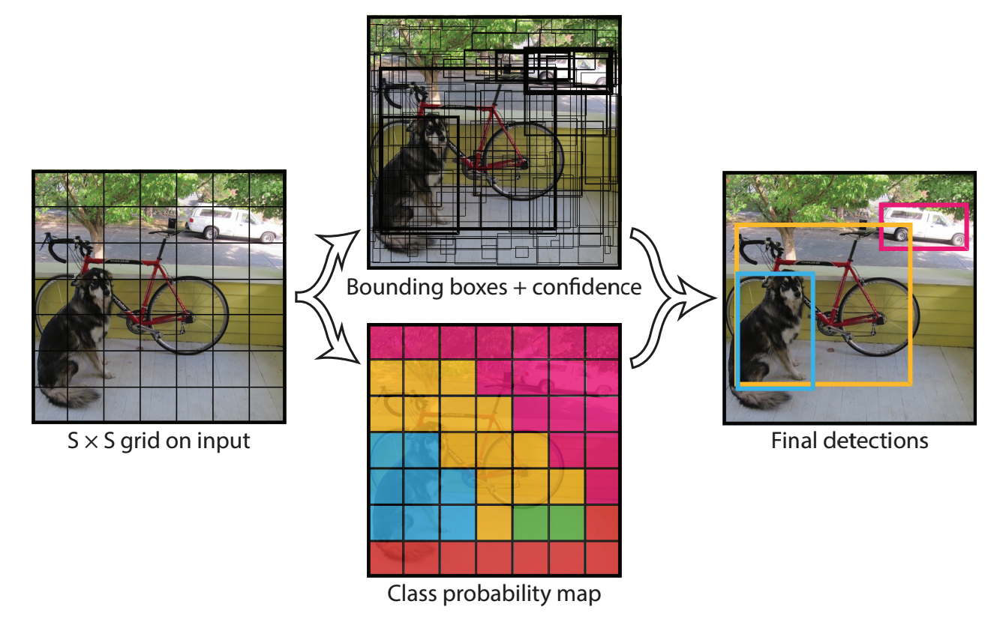

Towards transport resilience with real-time traffic monitoring
Dr Minh Kieu
Senior Lecturer
University of Auckland
These slides:
https://leminhkieu.github.io/p/MK-QuakeCore.html
Traffic monitoring
Loop detectors: High cost of maintainance and installation
Traffic monitoring with computer vision
How can we use the existing CCTV system for AI-based traffic monitoring?

Traffic analysis from NZTA's traffic CCTV cameras
Object detection algorithm YOLO: You only look once
State-of-the-art object detection algorithm
Annotated image dataset: Microsoft COCO

84 different objects, but not specialised in transportation
Research challenges
Focus on traffic vehicle objects
Process a large number of objects in real-time
Identify the actual locations of those objects on a real-world dataset
Enables us to estimate speed, flow, density
Our "sensors" are more durable and replacable
Multiple cameras are already operated
The system relies more on software rather than hardware
Extendable: e.g. incident/anomalies detection
On-going work 1: Identify the actual locations of those objects on a real-world dataset
https://www.youtube.com/watch?v=8IJcoYMlR4YOn-going work 2: Pedestrians/active transport systems
Take the coordinate conversion challenge to the next level!